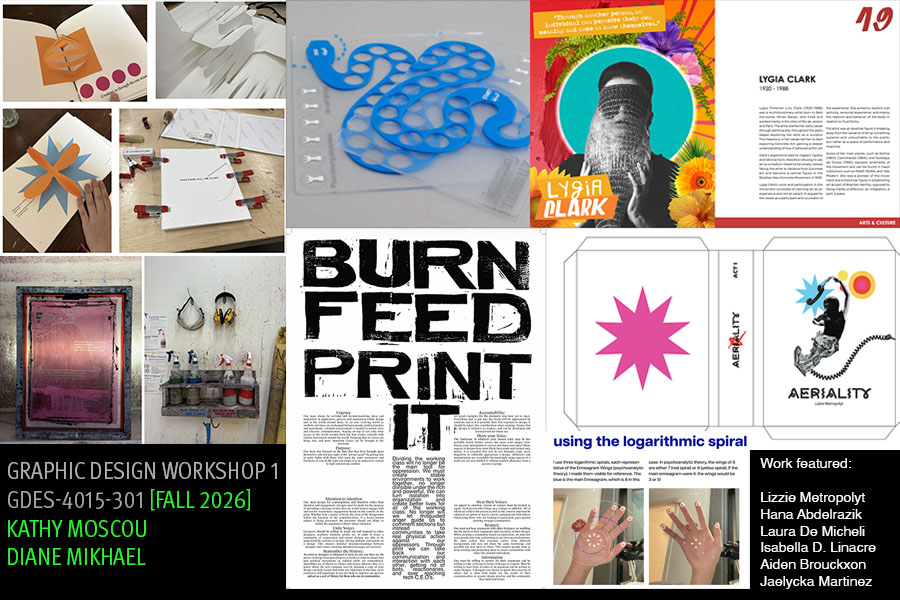

Hello All,
You’re receiving this because you are eligible to take Workshop (GRPH 4015 & 4016) in the coming year. I wanted to write a short note with information on the two sections we are offering, but first I’d like to quickly outline the value of this course:
For those of you who don’t know, Workshop is two 1-credit courses that run over the entire year. Informally, people regularly refer to it as “thesis” or “capstone.” It is an opportunity to develop a project that is wholly your own at OCADU. That means the topic, the ideas, and the output will be entirely yours.
Your instructors will be there to ensure quality and facilitate your research and making process. Contrary to some rumours, it does not have to be about a social issue. It should be about whatever you find compelling and point towards whatever direction you would like to take as designer. As a future creative professional, this is an essential skill for you to have. It will inform your process and professional practice.
While it can seem daunting to develop something so comprehensive from scratch, the courses are structured to give you scaffolding the whole way through. I highly recommend you consider taking these courses.
--
Ali Shamas Qadeer | BA MFA
Associate Professor (he/him)
Chair, Graphic Design
OCAD University
100 McCaul Street, Toronto, ON
Canada M5T 1W1
[writeup]

The Graphic Design Workshop 1 course in the Fall semester unpacks the concept of research, its tools, and values through the explorations of small projects/workshops. Students will discover the importance of being curious designers and gradually build their research path, interests, and begin to find their ‘voice’ as design authors. The workshops, collective and individual, as well as the show and tell sessions, will guide students to discover and learn how theories are put into practices through making and how design can respond to social, cultural or political needs or any design brief assigned.
Seminar discussions supported by shared reading materials, videos, or interviews help students develop in-depth processes that demonstrate the divergence and the convergence methods of thinking and making. During the semester, students should be able to formulate a research question that brings values in the context of design and the society. The research question (s) is to be articulated as the first draft of the thesis/project proposal. All activities during the Fall term should unpack the research question with explorations of research and making.
In order to take these courses, you must have taken: GRPH-3011 or GRPH-3018 and GRPH-3012 (with a minimum grade 60.)
13.5 credits overall